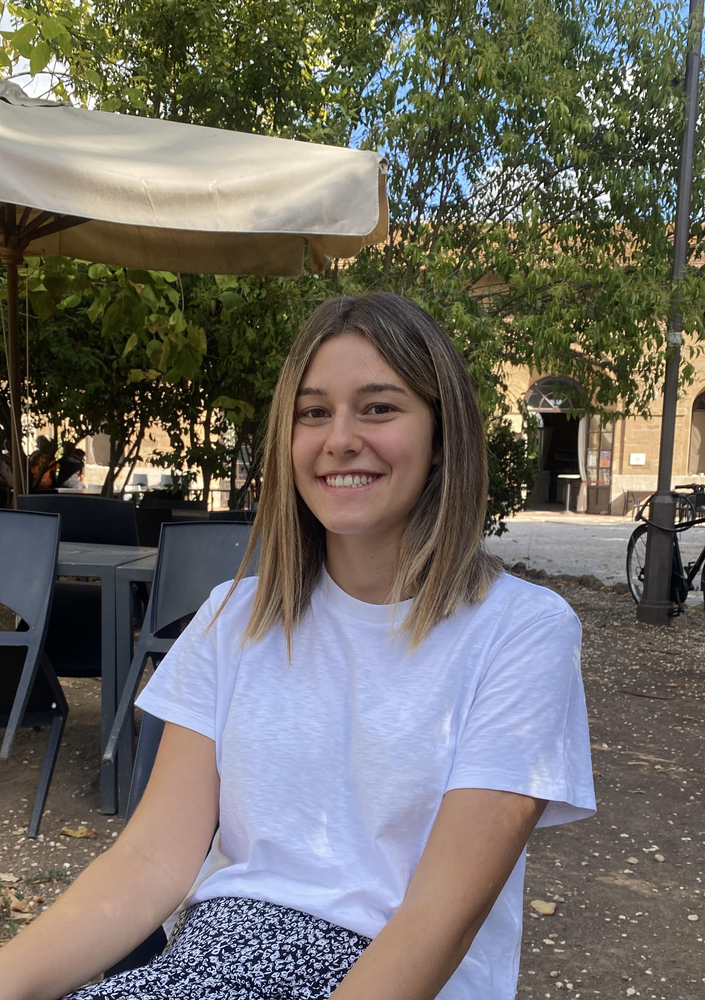

Shirley Guetta's Resume

Summary
As a Digital Sciences for Hi-Tech student at Tel Aviv University's Faculty of Engineering, I am a tech-driven, hardworking, and insatiably curious individual with a fervent passion for innovation. I approach every challenge with unwavering determination, and my adaptability makes me a valuable asset to any team, prepared to contribute effectively. I'm seeking opportunities to further harness my skills and knowledge in the dynamic world of high technology.
Education
Tel Aviv University | 2022-2025
[ (B.Sc.) Digital Sciences for Hi Tech | Faculty of Engineering ] The Hebrew University | 2021-2022
[ Preparatory Studies in Biology, Mathematics and Hebrew ]
Received an award in recognition of outstanding academic performance with a GPA of 99, reflecting dedication and excellence in preparatory studiesLiceo Scientifico Augusto Righi Roma | 2016-2021
[High School Diploma GPA 100/100]
Work Experience
Language Teacher | SafotSheli | 2022-2023
- Taught Italian to Diverse Audiences: Successfully instructed both adults and children in Italian, adapting teaching methods to meet the needs of varied age groups
- Facilitated Hebrew Language Learning for Newcomers: Played a pivotal role in teaching Hebrew to newcomers, helping them integrate linguistically and culturally into their new environment.
Skills
Technical Skills
- Programming Languages [Python, C, HTML, Rust]
- Data Analysis and Visualization [Matplotlib, Pandas, NumPy]
- Statistical Analysis and Hypothesis Testing [SciPy]
- Algorithm Design and Optimization
- Development Tools [GitHub, Visual Studio]
Soft Skills
- Leadership [Led and managed a team of 40 people as the Chief of Bene Akiva Rome youth movement, organizing biannual winter and summer camps for 300 children. Demonstrated strong leadership, organizational, and decision-making skills]
- Problem solving
- Time Management
- Adaptability
- Creativity
- Communication
Languages
Italian [Native Proficiency]
English [Full Professional Proficiency]
Hebrew [Full Professional Proficiency]
Extracurricular Activities
SOLANA ISRAEL BOOTCAMP | 2023
Acquired foundational Rust programming skills and mastered full-stack Solana development. Additionally, attended a 3-day HackerHouse Tel Aviv event focusing on Web3 technologies, collaborating with peers to explore the future of decentralized applications and blockchain.BRAZILIAN EMBASSY IN ROME | 2021
Developed and executed social media strategies to promote the embassy’s cultural and diplomatic initiatives, including official visits, events, and partnerships with local organizations.SAPIENZA UNIVERSITY OF ROME | 2020
Contributed to the development of the first graphical representations and growth studies of the COVID virus at the Engineering Development labs of the University of Rome La Sapienza.
Contact Details